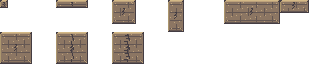

<!-- Special-block artwork: one reference sheet per style (tools/export_blocks.gd); the game draws these in code (scripts/block_art.gd). -->
<!doctype html><html lang="en"><meta charset="utf-8"><meta name="viewport" content="width=device-width,initial-scale=1"><title>Summit · block artwork</title>
<style>body{margin:0;background:#1b2036;color:#e6e4dc;font:16px system-ui,sans-serif}main{max-width:1160px;margin:45px auto;padding:24px}p{color:#b7c3d1}section{padding:22px;margin:20px 0;background:#242e46;border:1px solid #3e4b64;border-radius:8px}h2{margin:0 0 6px;font-size:20px}img{image-rendering:pixelated;display:block;margin-top:12px}select{font:inherit;background:#293650;color:white;padding:8px;border:1px solid #63768d}</style>
<main><h1>Block artwork</h1><p>Each sheet has one 56×32 cell per example size: 8×8, 32×8, 24×24, 16×32, 56×24, 29×13 (rails 5 px tall). Sizes per cell: <code>manifest.json</code>.</p>
<label>Preview scale <select id="scale"><option value="2">2×</option><option value="4" selected>4×</option><option value="6">6×</option></select></label><section><h2>Breakable wall</h2><p>Cracked masonry with a continuous stone frame. Second row: damage states 0, 1, 2.</p></section><section><h2>Crumble platform</h2><p>Brittle stone that gives way under the player.</p></section><section><h2>Falling block</h2><p>Riveted block that drops when stood on.</p></section><section><h2>Zip mover</h2><p>Brass block that travels along its track.</p></section><section><h2>Dream block</h2><p>Dark fill, white outline, animated stars in game.</p></section><section><h2>Jump-through rail</h2><p>Thin one-way platform (5 px tall).</p></section></main>
<script>const imgs=[...document.querySelectorAll("img")];const fit=()=>{const k=Number(document.querySelector("#scale").value);for(const i of imgs)i.width=i.naturalWidth*k};document.querySelector("#scale").onchange=fit;for(const i of imgs)i.onload=fit;</script>
